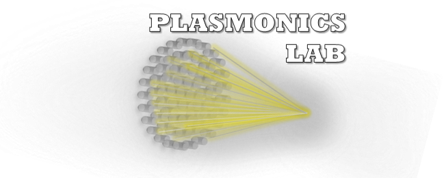
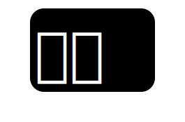
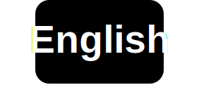

☰

Plasmonics Laboratory
國立中央大學 | 光電科學與工程學系 | 電漿子光學實驗室
 
HOME
首頁
MEMBER
成員
Professor
指導教授
Members
現任成員
Graduate
畢業生
RESEARCH
研究
Meta-Optics
超穎光學
Machine Learning
機器學習
CMOS Image Sensor
CMOS感光元件
NEWS
最新消息
CODE
程式碼
PUBLICATIONS
研究發表
PROJECTS
研究計畫
JOIN US
加入我們